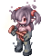
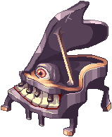
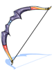
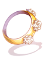
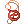

Dreams and Shadows (Español)
Walkthrough

- Ve a la entrada usando el Warper > Instances > Dreams and Shadows. Habla con Lecce y luego con Eugenie para iniciar la instancia junto con tu party.
- El líder de Party debe hablar con Lecce dentro de la instancia para iniciar y spawnear una oleada de mobs. Elimina la mob para poder proceder con la instancia.
- Un Red Mushroom aparecerá en la sala. Acércate a el para invocar mas mob. Tras activar todos los Red Mushroom del mapa y matar toda la mob, aparecerá un warp y podrás avanzar al siguiente mapa.
- Las siguientes salas tendrán una secuencia similar a la del paso 3. Acercarse al Red Mushroom y matar la mob para avanzar a la siguiente sala.
- Tras varias salas, verás a 3 Ferres. Habla con ellos para invocar un Jitterbug. Mientras luches con el Jitterbug, elimina todos los Black Mushroom que aparezcan. Campanella te informará si un Black Mushroom ha aparecido. La razón es para mitigar el daño de Poison Cloud que proviene de estos Black Mushroom.
- Continúa haciendo los pasos 3-5 hasta la última sala, donde los Ferres invocarán un Awakened Ferre. El Awakened Ferre también usa la misma mecánica de los Black Mushroom, así que asegúrate de eliminarlos para facilitarte un poco la batalla.
Mob
| Imagen | Nombre | Nivel | HP | Tamaño / Raza / Elemento |
|---|---|---|---|---|
| Ferre | 125 | 48,430 | Small / Demon / Earth 2 | |
|  | Ferre | 126 | 40,718 | Small / Demon / Water 2 |

|
Ferre | 127 | 53,290 | Small / Demon / Water 2 |
| Ferre | 128 | 52,280 | Small / Demon / Earth 2 | |
|  | Jitterbug | 135 | 2,614,000 | Large / Demon / Undead 2 |

|
Awakened Ferre
|
140 | 10,000,000 | Large / Demon / Undead 3 |
Recompensas
Drops
Los siguientes drops son considerados party drops:
- Los Monstruos no mostrarán estos items cuando uses @mi.
- Cuando uses @wd, verás que ningún monstruo los dropea.
- Los Items son dropeados individualmente para cada miembro de la party.
- Los equipos dropeados vendrán identificados.
- Cualquier tipo de Bubble gum no afectará el drop rate de estos items.
| Imagen | Nombre | Party Drops |
|---|---|---|
| Jitterbug |
| |
|
|
Awakened Ferre
|
|
Nota: Los Items que aparecen mas de una vez en esta lista pueden ser dropeados simultáneamente. Esto significa que puedes obtener hasta 3 Tooth of Jitterbug por Jitterbug y hasta 2 Tooth of Jitterbug por Awakened Ferre.
Intercambio de Equipo
Al final de la instancia, tras matar al Awakened Ferre, puedes intercambiar 25 Tooth of Jitterbug con Pimpernel por uno de los siguientes equipos al azar.
| Imagen | Nombre | Tipo | Descripción |
|---|---|---|---|

|
Bow of Storm [1] | Bow | 160 ATK. Daño de rango +30%. Reduce el Cooldown de  Severe Rainstorm en 2 segundos, Severe Rainstorm en 2 segundos, y aumenta el costo de SP en 15 puntos. |
|  | Gigantic Bow [1] | Bow | 195 ATK. Daño de rango +40%. Reduce la ASPD un 15% (delay after attack +15%), Hit -50. Equipable solo por Ranger. |

|
 Old Dancer's Floral Mic [2] Old Dancer's Floral Mic [2]
|
Whip | 160 ATK. Reduce el costo de SP de  Moonlight Serenade en 20 puntos. Moonlight Serenade en 20 puntos.
En combo con Old Dancer's Floral Bracelet [1]: |

|
 Old Bard's Ukulele [2] Old Bard's Ukulele [2]
|
Instrument | 160 ATK. Reduce el costo de SP de  Windmill Rush en 20 puntos. Windmill Rush en 20 puntos.
En combo con Old Bard's Wing Ring [1]: |
|  | Old Dancer's Floral Bracelet [1] | Accessory | Reduce un 25% el tiempo de Casteo Variable. Equipable solo por Wanderer. |

|
Old Bard's Wing Ring [1] | Accessory | Reduce un 25% el tiempo de Casteo Variable. Equipable solo por Maestro. |

|
 Pendant of Chaos | Accessory | ATK +6%. Reduce un 5% el daño recibido de elemento Shadow. Otorga inmunidad a Chaos. Hay una probabilidad de infligir Chaos en los enemigos al realizar ataques físicos. Hay una probabilidad de infligir Chaos en un área de 11x11al recibir daño. Int -6. En combo con |

|
 Pendant of Harmony Pendant of Harmony
|
Accessory | MATK +6%. HP y SP Recovery +50%. Reduce un 5% el daño recibido de elemento Holy. Hay una probabilidad de autocastear  Renovatio Lv1 cuando realizas daño físico. Renovatio Lv1 cuando realizas daño físico. Hay una probabilidad de autocastear  Sanctuary Lv3 cuando recibes daño físico. Sanctuary Lv3 cuando recibes daño físico. Str -5. En combo con Pendant of Chaos: |

También puedes pedirle a Pimpernel que combine Pendant of Chaos y Pendant of Harmony para crear un  Pendant of Maelstrom [1].
Pendant of Maelstrom [1].
| Imagen | Nombre | Tipo | Descripción |
|---|---|---|---|

|
Pendant of Maelstrom [1]
|
Accessory | ATK +6%. MATK +6%. All stats +1. Al recibir daño mágico puedes autocastear  Maelstrom Lv1. Maelstrom Lv1.
|
Cartas
| Carta | Va en | Efecto |
|---|---|---|
| Accesorio (Derecho) | Incrementa un 20% el daño físico contra enemigos de propiedad Neutral.
En combo con | |
| Accesorio (Izquierdo) | Incrementa un 20% el daño mágico contra enemigos de propiedad Neutral.
En combo con | |
| Headgear | Reduce el daño recibido de enemigos de propiedad Neutral un 10%. Max HP +500.
En combo con Mientras estás en esta forma, restaura 2000 HP e incrementa el daño físico y mágico contra enemigos de propiedad Neutral en un 200%. | |
| Armadura | Si se usa por Bard o Dancer class, MATK +15 por cada nivel de refine. |


Encantos

Puedes encantar las armas que obtengas en esta instancia hablando con Weapon's Master en la entrada de la instancia (dali02 114/95).
Las armas sin encantos obtenidas de Nightmarish Jitterbug no pueden ser encantas, por lo que tampoco pueden ser re-encantadas. Aún así, puedes usarlas como material para re-encantar otras armas.
El arma que será re-encantada debe estar equipada. Al encantar el arma, mantiene el nivel de refine, cartas y no tiene probabilidad de romperse.
Un re-encanto completo de los 3 encantos tendrá el siguiente costo:
- 1
 Black Jitterbug Tooth
Black Jitterbug Tooth - 1 Tooth of Jitterbug
- 1 arma cualquiera obtenida de Dreams and Shadows o Nightmarish Jitterbug
- 100,000 Zeny

Mantener uno de los 3 encantos y re-encantar los otros 2 tiene el siguiente costo:
- 1 Black Jitterbug Tooth
- 1 Tooth of Jitterbug
- 1 copia de la misma arma a re-encantar
- 2,000,000 Zeny
Encantos posibles
| Primer Slot | Segundo Slot | Tercer Slot |
|---|---|---|
|
|
|
Referencias de [elemento] y [raza]
| [Elemento] del enemigo | [Raza] del enemigo |
|---|---|
|
|